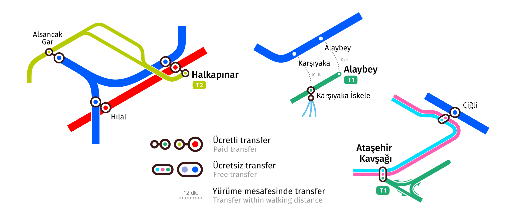
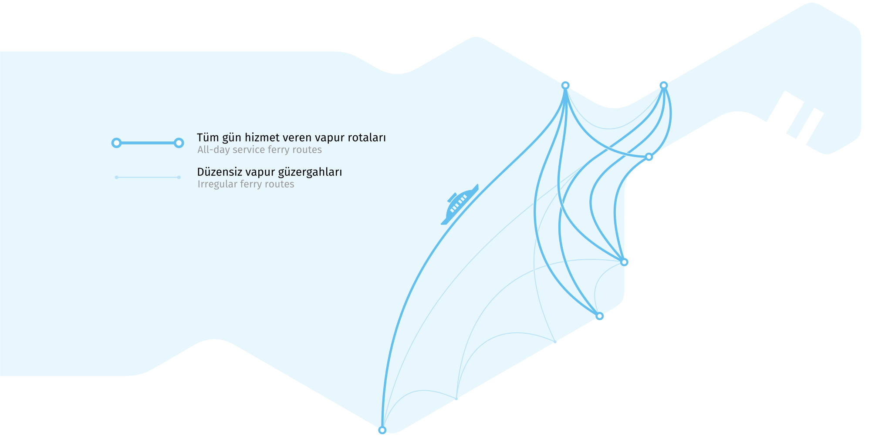
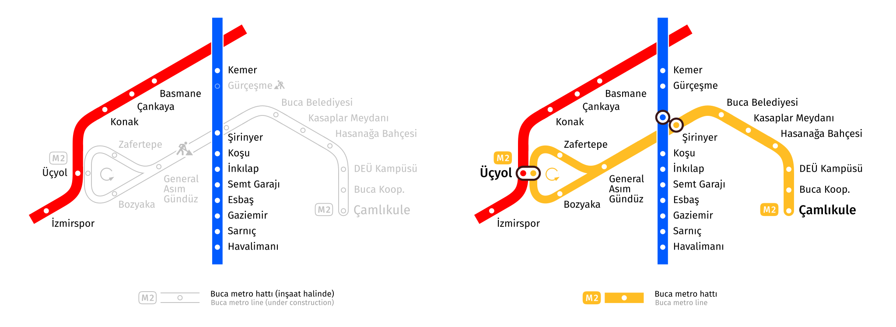
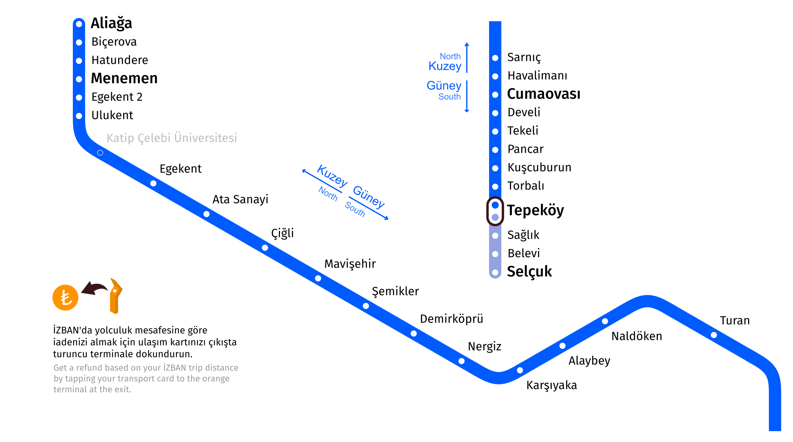
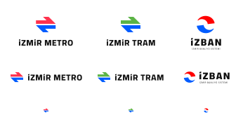

Shape of lines on the scheme
A scheme of transport is not a classic map. If it showed the actual geography of the routes, it would be too dense in the central districts and almost empty along the edges. That's why a transport scheme uses a distorted geography which keeps landmarks which matter for passengers' choice how to go.
Here is how the transport system looks on a geographic map in comparison to how it's shown by the scheme.
Triangle grid
The 60-degree triangle grid matches very well with the lines' actual geography and allows to avoid horizontal lines on the scheme which cause problems with stop labels placing. The single exception is the Çiğli tram line which has a couple of horizontal segments with a few stops.
Transfers
The new map shows transfers more accurately. Alaybey and Karşıyaka where the interchange between tram and İZBAN means a 10-minute walk by street or furthermore Mavişehir where transferring takes about a 15-minute walk aren't marked on the map as regular transfers anymore. Instead they are depicted with a dotted line labelled by time passengers have to spend to reach another station. Similarly, transfers to the ferry at Üçkuyular and Alsancak are represented.
Ferries
Ferry is a crucial mode of transportation in İzmir that saves a huge amount of time for passengers. Not showing it on the rapid transit map is a serious omission.
Ferry routes are separated into two types on the map, all-day service and irregular. All-day service means that these routes operate throughout the whole day both on weekdays and weekends. Such routes are shown with thick lines. Irregular routes operate only on weekends or have up to 4 trips a day. These routes are depicted by thin pale lines.
Colors
On the new scheme the lines' colors inherit the colors of the official scheme in general. İZBAN is blue, the metro is red, and tram lines are green. Different directions of the Çiğli tram line are officially marked with two colors, the inner one is blue and the outer one is red. To make them distinguishable from the İZBAN and metro lines, they're depicted with light blue and light red colors on the map.
Tones of all colors are adjusted to be distinguishable by people with color blindness.
Prospects
The scheme was initially designed to show the Buca metro line which should be opened in several years. Two İZBAN stations under construction are shown too with special marks.
MThe space for the tram line to Mavişehir İZBAN station and for the metro station in the center of Bornova is reserved, but they were hidden on the map because of unclear terms of building start or even more its completion. The other new lines of metro and tram aren't shown for the same reason.
İZBAN
The İZBAN system has a number of features that need to be represented on the map.
The navigation of İZBAN is based on directions to North and South which don't always coincide with the actual directions and are not obvious for passengers in general. The directions are shown on the map with pairs of arrows to help people find the right direction.
There are no single terminal stations in both directions. Half of the trains finish the route earlier, not at the last station in the direction. Such stations are marked in larger font, just like the last ones on the line. This makes it easier for passengers to find the name of the station displayed on the board on the map.
The segment of line from Tepeköy to Selçuk operates like a separate line. You have to transfer at Tepeköy to reach Selçuk from İzmir or vice versa. This segment is shown as a particular line of a different color. The rest of İZBAN, where transfers are not required, is shown in one color, unlike some official diagrams.
Logos
Currently logos of metro, tram and İZBAN looks bad in small sizes because they don't have variants with no labels. For the new map new logos were made. They inherit the main idea of original ones to be recognizable but the new icons have a more modern and clearer form and have the variants without labels.
How the map was being created
Author
Designed by Evgeny Katyshev, UX designer at EPAM based in İzmir.
Additional contributors:
- Ali Soyer, translator
- Ali Soyer, front-end developer